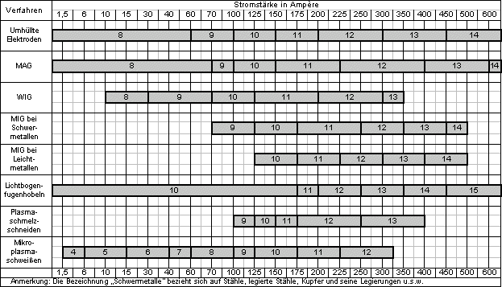

Bei der Auswahl eines geeigneten Augenschutzes als persönliche Schutzmaßnahme gegen Gefährdungen durch künstliche optische Strahlung ist es notwendig, die auf den entsprechenden Produkten vom Hersteller angebrachte Kennzeichnung zu berücksichtigen. Entsprechend der Achten Verordnung zum Produktsicherheitsgesetz (8. ProdSV) haben Hersteller Augenschutz zu kennzeichnen. Diese Kennzeichnung besteht aus dem CE-Kennzeichen und gegebenenfalls einer vierstelligen Kennnummer. Die Kennnummer bezeichnet die benannte Stelle, die die Produktionsüberwachung durchführt, und muss immer dann angegeben werden, wenn es sich bei dem Augenschutz um persönliche Schutzausrüstung (PSA) der Kategorie III handelt.
Zu PSA der Kategorie III gehören persönliche Schutzausrüstungen, die gegen tödliche Gefahren oder ernste und irreversible Gesundheitsschäden schützen sollen, und bei der man davon ausgehen muss, dass der Benutzer die unmittelbare Gefahr nicht rechtzeitig erkennen kann. Hierzu gehören auch der Augenschutz und Filter für die Hochtemperaturumgebung (Temperatur vergleichbar mit einer Lufttemperatur von 100 °C oder höher), die oftmals durch die Merkmale Infrarotstrahlung, Flammenschutz sowie Schutz vor großen Mengen geschmolzenen Metalls gekennzeichnet sind. PSA zum Schutz vor Gesundheitsschäden durch inkohärente optische Strahlung ist i.A. der Kategorie II zuzuordnen. Lediglich Augenschutz und Filter, die ausschließlich zum Schutz gegen Sonnenstrahlen konzipiert und hergestellt werden sowie Sonnenbrillen ohne Korrektureigenschaften werden der Kategorie I (geringe Gefährdung) zugeordnet.
Die Anforderungen an die Kennzeichnung von PSA zum Schutz vor Gesundheitsschäden durch inkohärente optische Strahlung sind in der Achten Verordnung zum Produktsicherheitsgesetz und darüber hinaus durch harmonisierte europäische Normen weiter konkretisiert. Die Kennzeichnung von PSA der Kategorie II zum Schutz vor inkohärenter optischer Strahlung besteht daher aus folgenden Angaben:
Augenschutz wird entsprechend den nachfolgenden Tabellen gekennzeichnet. Sichtscheiben und Tragkörper sind getrennt gekennzeichnet. Bestehen beide aus einer Einheit, befindet sich die Kennzeichnung auf dem Tragkörper.
Die in den nachfolgenden Abschnitten aufgeführten technischen Daten sind in der vorgegebenen Reihenfolge auf Sichtscheiben oder Tragkörpern angebracht.
Die Kennzeichnung der Sichtscheiben muss wesentliche technische Informationen in folgender Form enthalten:
| Tab. A4.1 | Kennzeichnung von Sichtscheiben |
| Schutzstufe (nur Filter)* | Identifikationszeichen des Herstellers | Optische Klasse (ausgenommen bei Vorsatzscheiben) | Kurzzeichen für mechanische Festigkeit* | Kurzzeichen für Beständigkeit gegen Lichtbogen* | Kurzzeichen für Nichthaften von Schmelzmetall und Beständigkeit gegen Durchdringen heißer Festkörper* | Kurzzeichen für Oberflächenbeständigkeit gegen Beschädigung durch kleine Teilchen* | Kurzzeichen für die Beständigkeit gegen Beschlagen* | Kurzzeichen für erhöhten Reflexionsgrad* | Kurzzeichen für Original- oder Ersatzscheibe* |
| X1 | X | X2 | X3 | 8 | 9 | K | N | R | O V |
| * | falls zutreffend |
| X1 | Schutzstufennummer gemäß Tabelle A4.2 |
| X2 | Optische Klasse gemäß Tabelle A4.3 |
| X3 | Festigkeit gemäß Tabelle A4.6 |
Die Strahlendurchlässigkeit eines Filters wird durch eine Schutzstufe dargestellt. Die Schutzstufe besteht aus einer Vorzahl und der Schutzstufennummer des Filters, die durch einen Bindestrich getrennt werden. Dabei gilt, je höher die Schutzstufennummer, desto geringer ist die Durchlässigkeit für optische Strahlung.
| Tab. A4.2 | Schutzstufen der Filter nach DIN EN 166 |
| Schutzstufe | |||||
| Schweißer- Schutzfilter | Ultraviolett- Schutzfilter | Infrarot- Schutzfilter | Sonnen- Schutzfilter | ||
| ohne Vorzahl | Vorzahl 2 | Vorzahl 3 | Vorzahl 4 | Vorzahl 5 | Vorzahl 6 |
| 1,2 1,4 1,7 2 2,5 3 4 4a 5 5a 6 6a 7 7a 8 9 10 11 12 13 14 15 16 | 2-1,2 2-1,4 | 3-1,2 3-1,4 3-1,7 3-2 3-2,5 3-3 3-4 3-5 | 4-1,2 4-1,4 4-1,7 4-2 4-2,5 4-3 4-4 4-5 4-6 4-7 4-8 4-9 4-10 | 5-1,1 5-1,4 5-1,7 5-2 5-2,5 5-3,1 5-4,1 | 6-1,1 6-1,4 6-1,7 6-2 6-2,5 6-3,1 6-4,1 |
| Bedeutung der Vorzahlen: | |
| 2 | UV-Filter, die Farberkennung kann beeinflusst werden |
| 3 | UV-Filter, gute Farberkennung |
| 4 | IR-Filter |
| 5 | Sonnenschutzfilter ohne Anforderung an den Infrarotschutz |
| 6 | Sonnenschutzfilter mit Anforderung an den Infrarotschutz |
Um das für den jeweiligen Arbeitsvorgang erforderliche Sehen zu ermöglichen, müssen die Brechwerte der Sichtscheiben die in den Normen genannten Anforderungen erfüllen. Dementsprechend werden Sichtscheiben in drei Klassen eingeteilt:
| Tab. A4.3 | Optische Klassen |
| Klasse | Bedeutung |
| 1 | Für Arbeiten mit besonders hohen Anforderungen an die Sehleistung für den Dauergebrauch. |
| 2 | Für Arbeiten mit durchschnittlichen Anforderungen an die Sehleistung. |
| 3 | Nur in Ausnahmefällen für grobe Arbeiten ohne größere Anforderungen an die Sehleistung und nicht für den Dauergebrauch. |
Ausgenommen hiervon sind Vorsatzscheiben, da diese immer die Forderungen der optischen Klasse 1 erfüllen müssen. Daher entfällt für Vorsatzscheiben die Angabe der optischen Klasse.
Die Kennzeichnung der Tragkörper muss die wesentlichen Informationen in folgender Form enthalten:
| Tab. A4.4 | Kennzeichnung von Tragkörpern |
| Identifikations- zeichen des Herstellers | Verwendungs- bereich | Nummer der Norm | Codezahl für Stoßprüfung, falls zutreffend | |
| Kurzzeichen | X | X1 | N | X2 |
| X1 | siehe Tabelle A4.5 |
| X2 | siehe Tabelle A4.6 |
| Tab. A4.5 | Kurzzeichen für Verwendungsbereiche von Tragkörpern nach DIN EN 166 |
| Kurzzeichen | Bezeichnung | Beschreibung des Verwendungsbereiches |
| keines | Nicht festgelegte mechanische Risiken, Gefährdung durch ultraviolette, sichtbare und infrarote Strahlung und Sonnenstrahlung | |
| 3 | Flüssigkeiten | Flüssigkeiten (Tropfen und Spritzer) |
| 4 | Grobstaub | Staub mit einer Korngröße > 5 µm |
| 5 | Gas und Feinstaub | Gase, Dämpfe, Nebel, Rauch und Staub < 5 µm |
| 8 | Störlichtbogen | elektrische Lichtbogen bei Kurzschluss in elektrischen Anlagen |
| 9 | Schmelzmetall und heiße Festkörper | Metallspritzer und Durchdringen heißer Festkörper |
| Tab. A4.6 | Kurzzeichen für die Beständigkeit von Tragkörpern gegen Teilchen hoher Geschwindigkeit |
| Kurzzeichen | Beschreibung des Verwendungsbereiches |
| -F | Stoß mit niedriger Energie (Prüfung 0,88 g Stahlkugel mit 45 m/s Geschwindigkeit) |
| -B | Stoß mit mittlerer Energie (Prüfung 0,88 g Stahlkugel mit 120 m/s Geschwindigkeit) |
| -A | Stoß mit hoher Energie (Prüfung 0,88 g Stahlkugel mit 190 m/s Geschwindigkeit) |
Bestehen Sichtscheiben und Tragkörper aus einer Einheit, ist die vollständige Kennzeichnung der Sichtscheiben, ergänzt durch einen Bindestrich und die Kennziffer(n) des Gefährdungsbereiches des Tragkörpers, auf diesem angebracht. Ein Augenschutzgerät bietet nur dann für einen bestimmten Anwendungsfall einen ausreichenden Schutz, wenn sich die geeigneten Sichtscheiben in dem für den Anwendungsfall geeigneten Tragkörper befinden.
Sicherheitssichtscheiben ohne Filterwirkung mit höchstem Niveau mechanischer Schutzfunktion:
| Tab. A4.7 | Kennzeichnung von Sichtscheiben ohne Filterwirkung |
| Identifikationszeichen des Herstellers | Optische Klasse | Kurzzeichen für mechanische Festigkeit, z. B. Stoß mit hoher Energie | |
| Kurzzeichen | X | 3 | A |
| Tab. A4.8 | Kennzeichnung von Schweißerschutzfiltern |
| Schutzstufennummer (siehe Tab. A4.21) | Identifikationszeichen des Herstellers | Optische Klasse | |
| Kurzzeichen | 11 | X | 1 |
| Tab. A4.9 | Kennzeichnung von Schweißerschutzfiltern mit mechanischer Schutzfunktion |
| Schutzstufennummer (siehe Tab. A4.21) | Identifikationszeichen des Herstellers | Optische Klasse | Kurzzeichen für erhöhte mechanische Festigkeit | |
| Kurzzeichen | 5 | X | 2 | S |
An die Stelle der Schutzstufennummer treten die Schutzstufennummern der Hell- und Dunkelstufe, getrennt durch einen Schrägstrich. Ist der Dunkelzustand von Hand einstellbar, sind die Grenzen des erreichbaren Schutzstufenbereiches mit Bindestrich getrennt zu kennzeichnen.
Die optische Klasse nach DIN EN 166 wird – durch Schrägstriche getrennt – um die Streulichtklasse und die Homogenitätsklasse nach DIN EN 379 ergänzt; hier z. B. 1/3/2.
Beispiel einer vollständigen Kennzeichnung:
| Tab. A4.10 | Kennzeichnung von Schweißerschutzfiltern mit umschaltbarer Schutzstufe |
| Hell- stufe | Dunkel- stufe(n)- Bereich 1 (falls zutref- fend) | Dunkel- stufe(n)- Bereich 2 (falls zutref- fend) | Kenn- zei- chen des Her- stel- lers | Optische Klasse | Streu- licht- klasse | Homo- geni- täts- klasse | Nummer der Norm | |
| Kurzzeichen | 5/ | 11 - | 13 | 0 | 1/ | 3/ | 2 | 379 |
An die Stelle der einzigen Schutzstufennummer treten die Schutzstufennummern der Hell- und Dunkelstufe(n) durch ein Plus-Zeichen getrennt, z. B. 6 + 10.
| Tab. A4.11 | Kennzeichnung von Schweißerschutzfiltern mit zwei Schutzstufen |
| Schutzstufe der Hellzone(n) | Schutzstufe der Dunkelzone(n) | Kennbuchstabe des Herstellers | Optische Klasse | |
| Kurzzeichen | 6+ | 10 | X | 1 |
Zusätzlich sind gegebenenfalls die Zeichen für die Erfüllung von Zusatzanforderungen nach DIN EN 166 angebracht.
| Tab. A4.12 | Kennzeichnung von UV-Schutzfiltern ohne mechanische Schutzfunktion |
| Vorzahl für UV-Schutzfilter, z. B. mit guter Farbkennung | Schutzstufen- nummer (siehe Tab. A4.23) | Identifikationszeichen des Herstellers | Optische Klasse | |
| Kurzzeichen | 3 - | 1,7 | X | 1 |
| Tab. A4.13 | Kennzeichnung von UV-Schutzfiltern mit mechanischer Schutzfunktion |
| Vorzahl für UV-Filter, z. B. mit beeinträchtigter Farbkennung | Schutzstufen- nummer (siehe Tab. A4.23) | Identifikationszeichen des Herstellers | Optische Klasse | Kurzzeichen für Stoß mit mittlerer Energie | |
| Kurzzeichen | 2 - | 1,4 | X | 2 | B |
| Tab. A4.14 | Kennzeichnung von IR-Schutzfiltern ohne mechanische Schutzfunktion |
| Vorzahl für IR-Schutzfilter | Schutzstufennummer (siehe Tab. A4.24) | Identifikationszeichen des Herstellers | Optische Klasse | |
| Kurzzeichen | 4 - | 4 | X | 1 |
| Tab. A4.15 | Kennzeichnung von IR-Schutzfiltern mit mechanischer Schutzfunktion |
| Vorzahl für IR-Schutzfilter | Schutzstufennummer (siehe Tab. A4.24) | Identifikationszeichen des Herstellers | Optische Klasse | Kurzzeichen für Stoß mit niedriger Energie | Kurzzeichen für Nichthaften von Schmelzmetall Festkörper | |
| Kurzzeichen | 4 - | 5 | X | 2 | F | 9 |
| Tab. A4.16 | Kennzeichnung von Sonnenschutzfiltern |
| Vorzahl für Sonnenschutzfilter, z. B. ohne IR-Anforderung | Schutzstufennummer (siehe Tab. A4.25) | Identifikationszeichen des Herstellers | Optische Klasse | |
| Kurzzeichen | 5 | 1,7 | X | 1 |
| Tab. A4.17 | Kennzeichnung von Sonnenschutzfiltern mit mechanischer Schutzfunktion |
| Vorzahl für Sonnenschutzfilter, z. B. mit IR- Anforderung | Schutzstufennummer (siehe Tab. A4.25) | Identifikationszeichen des Herstellers | Optische Klasse | Erhöhte mechanische Festigkeit | |
| Kurzzeichen | 6 - | 2 | X | 2 | S |
| Tab. A4.18 | Kennzeichnung von Vorsatzscheiben |
| Identifikationszeichen des Herstellers | |
| Kurzzeichen | X |
| Tab. A4.19 | Kennzeichnung von Tragkörpern zum Schutz gegen mechanische Risiken und optische Strahlung |
| Identifikationszeichen des Herstellers | Nummer der Norm | Kurzzeichen für Stoß mit niedriger Energie | |
| Kurzzeichen | X | N | F |
| Tab. A4.20 | Kennzeichnung von Tragkörpern zum Schutz gegen Störlichtbögen |
| Identifikationszeichen des Herstellers | Nummer der Norm | Verwendungsbereich Störlichtbogen | |
| Kurzzeichen | X | N | 8 |
Schweißerschutzfilter beim Gasschweißen:
| Tab. A4.21 | Schutzstufen für Schweißerschutzfilter beim Gasschweißen |
| Schutz- stufen | Verwendung | Verbrauch | ||||
| Gas | Volumendurchsatz in I/h | |||||
| 2 2,5 3 | Leichte Brennschneidarbeiten | |||||
| 4 | Schweißen und Hartlöten | Acetylen | bis | 70 | ||
| Brennschneiden | Sauerstoff | bis | 900 | |||
| 5 | Schweißen und Härtlöten | Acetylen | über | 70 | bis | 200 |
| Brennschneiden | Sauerstoff | über | 900 | bis | 2000 | |
| 6 | Schweißen und Hartlöten | Acetylen | über | 200 | bis | 800 |
| Brennschneiden | Sauerstoff | über | 2000 | bis | 4000 | |
| 7 | Schweißen und Hartlöten | Acetylen | über | 800 | ||
| Brennschneiden | Sauerstoff | über | 4000 | bis | 8000 | |
| 8 | Brennschneiden | Sauerstoff | über | 8000 | ||
Empfohlene Filterschutzstufen sind grau unterlegt.
| Tab. A4.22 | Filterstufen für Schweißerschutzfilter beim Lichtbogenschweißen |

| Tab. A4.23 | Schutzstufen für UV-Schutzfilter |
| Schutzstufe | Farberkennung | Typische Anwendungen | Typische Strahlungsquellen1) | ||||
| 2–1,2 | kann beeinträchtigt sein | Zur Anwendung mit Strahlungsquellen, die überwiegend Ultraviolettstrahlung emittieren, wenn die Blendung kein wesentlicher Faktor ist. | Quecksilberniederdrucklampen, wie sie zur Fluoreszenzanregung benutzt werden oder "Schwarzlichtstrahler" | ||||
| 2–1,4 | kann beeinträchtigt sein | Zur Anwendung mit Strahlungsquellen, die überwiegend Ultraviolettstrahlung emittieren, wenn eine gewisse Absorption der sichtbaren Strahlung notwendig ist. | Quecksilberniederdrucklampen, z. B. aktinische Lampen | ||||
| 3–1,2 3–1,4 3–1,7 | keine wesentliche Verschlechterung | Zur Anwendung mit Strahlungsquellen, die überwiegend Ultraviolettstrahlung bei Wellenlängen < 313 nm emittieren, wenn die Blendung kein wesentlicher Faktor ist. Dies gilt für UVC und für den größten Teil von UVB.2) | Quecksilberniederdrucklampen, z. B. die Lampen für die Keimtötung | ||||
| 3–2,0 3–2,5 | keine wesentliche Verschlechterung | Quecksilberdampf-Mitteldrucklampen, z. B. photochemische Lampen | |||||
| 3–3 3–4 | Quecksilberdampf-Hoch- und Metall-Halogen-Lampen, z. B. Sonnenlampen für Solarien | ||||||
| 3–5 | Quecksilberdampf-Hoch- und -Höchstdrucklampen und Xenonlampen, z. B. Heimsonnen, Solarien und gepulste Lasersysteme | ||||||
| |||||||
| Tab. A4.24 | Schutzstufen für IR-Schutzfilter |
| Schutzstufe | Typische Anwendung für Strahler der mittleren Temperatur °C |
| 4–1,2 | über 1050 |
| 4–1,4 | 1070 |
| 4–1,7 | 1090 |
| 4–2 | 1110 |
| 4–2,5 | 1140 |
| 4–3 | 1210 |
| 4–4 | 1290 |
| 4–5 | 1390 |
| 4–6 | 1500 |
| 4–7 | 1650 |
| 4–8 | 1800 |
| 4–9 | 2000 |
| 4–10 | 2150 |
| Tab. A4.25 | Schutzstufen für Sonnenschutzfilter |
| Schutzstufe | Verwendung | Bezeichnung1) | ||
| 5–1,1 6–1,1 | Diese Schutzstufe gilt nur für bestimmte phototrope Sonnenschutzfilter im hellen Zustand und für den Bereich hoher Lichttransmission von Verlauffiltern | |||
| 5–1,4 6–1,4 | als sehr heller Filter | sehr hell | ||
| 5–1,7 6–1,7 | als heller Filter | hell | ||
| 5–2 6–2 | als empfohlener Universalfilter meist gut verwendbar | mittel | ||
| 5–2,5 6–2,5 | meist gebräuchlich in Mitteleuropa | dunkel | ||
| 5–3,1 6–3,1 | in den Tropen und Subtropen, für Himmelsbeobachtungen, im Hochgebirge, Schneeflächen, hellen Wasserflächen, Sandflächen, Kalk- und Kreidebrüchen, für den Straßenverkehr nicht zu empfehlen | sehr dunkel | ||
| 5–4,1 6–4,1 | nur bei extremen Bestrahlungsstärken, nicht für den Straßenverkehr geeignet | extrem dunkel | ||
| ||||